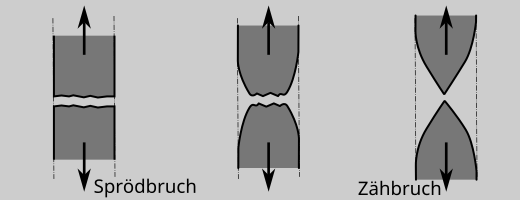

6. Grundlagen#
6.1. Verformungsverhalten#
Die reversibele Verformung wird als elastische Verformung bezeichnet. Die bleibende Verformung als plastische Verformung.
Tritt also unter Last bei einem Werkstoff oder Bauteil eine Verformung auf und nach Wegnahme der Last geht auch die Verformung wieder komplatt zurück, handelt es sich um eine rein elastische Verformung. Lässt sich das Verformungsverhalten linear beschreiben, handelt es sich um eine linear elastische Verformung. Ist die elastische Verformug zeitabhängig, handelt es sich um eine viscoelastische Verformung. Metallische Werkstoffe lassen sich in der Regel linear elastisch beschreiben.
Ist die Verformung nicht komplett reversibel, kommt zur elastischen Verformung die plastische Verformung hinzu. Die plastische Verformung ist der Verformungsanteil, der sich nciht zurückverformt. Auch dieser Verformungsanteil kann Zeitabhängig sein. Diese Verformung wird als viscoplastische Verformung bezeichnet. Metallische Werkstoffe zeigen in der Regel eine mehr oder weniger ausgeprägte plastische Verformung, die oft als zeitunabhängig angesehen werden kann.
6.2. Versagensarten / Bruchverhalten#
Bei dem Versagen von Werkstoffen wird zwischen einem spröden und duktilen bzw. zähem Bruch unterschieden. Werkstoffe, die nach einer ausgeprägten plastischen Verformung versagen werden als zäh bzw. duktil bezeichnet.
Werkstoffe die bis zum Bruch keine, oder nur eine geringe plastische Verformung aufzeigen werden als spröde bezeichnet.

Gewöhnlich ist duktiles Werkstoffverhalten gewünscht, d.h. es gibt einen Warnbereich vor dem Bruch.
Note
Die Begriffe zäh und duktil werden eigentlich synonym verwendet. Der Begriff zäh wird in der Regel in Kombination mit Werkstoffkennwerten verwendet (z.B. Bruchzähigkeit) und beschreibt eher den Widerstand gegen Bruch bzw. Rissausbreitung. Der Begriff duktil beschreibt umfasst dagegen das gesamte Verformungsverhalten.
Ob ein Werkstoff zäh oder spröd bricht, ist - neben dem Werkstoff an sich - abhängig von den Beanspruchungsbedingungen
Temperatur
Belastungsgeschwindigkeit
Beanspruchungs-mehrachsigkeit
Achtung: Es ist das zähe, bzw. spröde Werkstoff- von dem Bauteilverhalten zu unterscheiden. Auch Bauteile aus duktilen Werkstoffen können abh. von den oben gennten Bedingungen spröde, also verformungsarm, versagen.
6.3. Kerbschlagbiegeversuch#
Als schnelles und einfaches Prüfverfahren, zur charakterisierung des Bruchverhaltens wird der Kerbschalgbiegeverusch nach DIN EN ISO148-1 verwendet. In dem Verusch lassen sich durch tiefe Prüftemperaturen, die schlagartige Belastung und die Mehrachsigkeit durch die Kerbprobe werkstoffe unter sehr sprödbruchbegünstigenden Bedingungen Prüfen. Ergebnis der Einzelprüfung ist die Kerbschalgenergie (Kerbschalgarbeit) der Einzelprobe. Das Ergebnis eine Prüfreihe mit unterschiedlichen Temperaturen die Übergangstemperatur von sprädem zu zähem Bruchverhalten.
Der Kerbschlagbiegeversuch liefert KEINE Kennwerte für die Festigkeitsrechnung (zumindest nicht direkt). Er dient vor allem
zur Güteprüfung der Werkstoffe und
zur Beurteilung der Sprödbruchneigung der Werkstoffe.
Die Belastungsbedingungen im Bauteil sind in der Regel nicht direkt mit den im Belastungen im Kerbschlagbiegeversuch vergleichbar, und stehllen in der Regel eine Extrembeanspruchung dar.